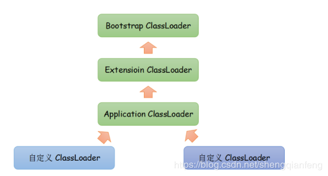

原文连接:https://www.cnblogs.com/java1024/p/11715308.html
原文链接：https://blog.csdn.net/shengqianfeng/article/details/102572691
memcache的分布式原理
memcached 虽然称为 “ 分布式 ” 缓存服务器，但服务器端并没有 “ 分布式 ” 功能。每个服务器都是完全独立和隔离的服务。 memcached 的分布式，则是完全由客户端程序库实现的。 这种分布式是 memcached 的最大特点。
memcache的内存分配机制
如何存放数据到memcached缓存中？（memcache内存分配机制）
Slab Allocator内存分配机制：
预先将内存分配成数个slab仓库，每个仓库再切出不同大小的chunk，去适配收到的数据。多余的只能造成浪费，不可避免。
增长因子(Grace factor)：一般而言观察数据大小的变化规律设置合理的增长因子，默认1.25倍.
太大容易造成浪费。memcached.exe -m 64 -p 11211 -f 1.25
如果有100byte的内容要存储，但122大小的仓库的chunk用满了怎么办？
答:是并不会寻找更大仓库的chunk来存储，而是把122仓库中的旧数据踢掉！
memcache的惰性失效机制
1 当某个值过期后并不会从内存删除。（因此status统计时的curr_items有其信息）
2 如果之前没有get过，将不会自动删除。
如果（过期失效，没get过一次）又没有一个新值去占用他的位置时，当做空的chunk占用。
3 当取其值（get）时，判断是否过期：如果过期返回空，且清空。（所以curr_items就减少了）
即这个过期只是让用户看不到这个数据而已，并没有在过期的瞬间立即从内存删除，这个过程
称为lazy expirtion，属性失效，好处是节约了cpu和检测的成本，称为“惰性失效机制”
memcache缓存的无底洞现象
缓存的无底洞现象：
facebook的工作人员反应，他们在2010年左右，memcacahed节点就已经达到3000个，大约数千G的缓存，他们发现一个问题，memchache连接频率太高导致效率下降，于是加memcache节点，添加后发现连接频率导致的问题仍然没有好转，称之为“无底洞现象”。
问题分析：
以用户为例：user-133-age，user-133_name，user-133-height…N个key
当服务器增多，133号用户的信息也被散落在更多的服务器，
所以同样是访问个人主页，得到相同的个人信息，节点越多，要连接节点越多，对于memcache的连接数并没有随着节点的增多而降低，问题出现。
事实上：
nosql和传统的rdbms并不是水火不容，两者在某些设计上是可以相互参考的。
对于nosql的key-value这种存储，key的设计可以参考mysql中表和列的设计。
比如user表下有age、name、height列，对应的key可以用user：133：age=23，user：133：name=ls，user：133：height=168；
问题的解决方案：
把某一组key按其共同前缀来分布，比如：user：133：age=23，user：133：name=ls，user：133：height=168；
在用分布式算法求其节点时，应该以user：133来计算，而不是以user：133：age来计算，这样这三个关于个人信息的key都落在同一个节点上。
再次访问只需要连接一个节点。问题解决。
一致性Hash算法的实现原理
Hash环
我们把232次方想成一个环，比如钟表上有60个分针点组成一个圆，那么hash环就是由232个点组成的圆。第一个点是0，最后一个点是232-1,我们把这232个点组成的环称之为HASH环。
一致性Hash算法
将memcached物理机节点通过Hash算法虚拟到一个虚拟闭环上（由0到232构成），key请求的时候通过Hash算法计算出Hash值然后对232取模，定位到环上顺时针方向最接近的虚拟物理节点就是要找到的缓存服务器。
假设有ABC三台缓存服务器：
我们使用这三台服务器各自的IP进行hash计算然后对2~32取模即：
Hash(服务器IP)%2~32
计算出来的结果是0到2~32-1的一个整数，那么Hash环上必有一个点与之对应。比如：
现在缓存服务器已经落到了Hash环上，接下来我们就看我们的数据是怎么放到缓存服务器的？
我们可以同样对Object取Hash值然后对2~32取模，比如落到了接近A的一个点上：
那么这个数据理应存到A这个缓存服务器节点上
所以，在缓存服务器节点数量不变的情况下，缓存的落点是不会变的。
但是如果B挂掉了呢？
按照hash且取模的算法，图中3这个Object理应就分配到了C这个节点上去了，所以就会到C上找缓存数据，结果当然是找不到，进而从DB读取数据重新放到了C上。
但是对于编号为1,2的Object还是落到A，编号为4的Object还是落到C，B宕机所影响的仅仅是3这个Object。这就是一致性Hash算法的优点。
Hash环的倾斜
前面我们理想化的把三台memcache机器均匀分到了Hash环上：
但是现实情况可能是：
如果Hash环倾斜，即缓存服务器过于集中将会导致大量缓存数据被分配到了同一个服务器上。比如编号1,2,3,4,6的Object都被存到了A，5被存到B，而C上竟然一个数据都没有，这将造成内存空间的浪费。
为了解决这个问题，一致性Hash算法中使用“虚拟节点”解决。
虚拟节点解决Hash环倾斜
“虚拟节点”是“实际节点”在hash环上的复制品，一个实际节点可能对应多个虚拟节点。这样就可以将ABC三台服务器相对均匀分配到Hash环上，以减少Hash环倾斜的影响，使得缓存被均匀分配到hash环上。
hash算法平衡性
平衡性指的是hash的结果尽可能分布到所有的缓存中去，这样可以使得所有的缓存空间都可以得到利用。但是hash算法不保证绝对的平衡性，为了解决这个问题一致性hash引入了“虚拟节点”的概念。虚拟节点”（ virtual node ）是实际节点在 hash 空间的复制品（ replica ），一实际个节点对应了若干个“虚拟节点”，这个对应个数也成为“复制个数”，“虚拟节点”在 hash 空间中以 hash 值排列。“虚拟节点”的hash计算可以采用对应节点的IP地址加数字后缀的方式。
例如假设 cache A 的 IP 地址为202.168.14.241 。
引入“虚拟节点”前，计算 cache A 的 hash 值： Hash(“202.168.14.241”);
引入“虚拟节点”后，计算“虚拟节”点 cache A1 和 cache A2 的 hash 值：
Hash(“202.168.14.241#1”); // cache A1
Hash(“202.168.14.241#2”); // cache A2
这样只要是命中cacheA1和cacheA2节点，就相当于命中了cacheA的缓存。这样平衡性就得到了提高。
参考：https://www.cnblogs.com/yixiwenwen/p/3580646.html
memcached与redis的区别
1 redis做存储，可以持久化，memcache做缓存，数据易丢失。
2 redis支持多数据类型，memcache存放字符串。
3 redis服务端仅支持单进程、单线程访问，也就是先来后到的串行模式，避免线程上下文切换，自然也就保证数据操作的原子性。Memcache服务端是支持多线程访问的。
4 redis虽然是单进程单线程模式，但是redis使用了IO多路复用技术做到一个线程可以处理很多个请求来保证高性能。
Redis的主从复制
1 在Slave启动并连接到Master之后，它将主动发送一个SYNC命令给Master。
2 Master在收到SYNC命令之后，将执行BGSAVE命令执行后台存盘进程(rdb快照), 同时收集所有接收到的修改数据集的命令即写命令到缓冲区，在后台存盘进程执行完毕后，Master将传送整个数据库文件到Slave。
3 Slave在接收到数据库文件数据之后，将自身内存清空，加载rdb文件到内存中完成一次完全同步。
4 接着，Master继续将所有已经收集到缓冲区的修改命令，和新的修改命令依次传送给Slaves
5 Slave将在本地执行这些数据修改命令，从而达到最终的数据同步
6 之后Master和Slave之间会不断通过异步方式进行命令的同步，从而保证数据的实时同步
7 如果Master和Slave之间的链接出现断连现象，Slave可以自动重连Master，但是在
重新连接成功之后：
2.8之前的redis将进行一次完全同步
2.8之后进行部分同步，使用的是PSYNC命令
如下：
Redis的部分复制过程
部分同步工作原理如下：
1)：Master为被发送的复制流创建一个内存缓冲区（in-memory backlog），记录最近发送的复制流命令
2)：Master和Slave之间都记录一个复制偏移量（replication offset）和当前Master ID（Master run id）
3)：当出现网络断开，Slave会重新连接，并且向Master请求继续执行原来的复制进程
4)：如果Slave中断网前的MasterID和当前要连的MasterID相同，并且从断开时到当前时刻Slave记录的偏移量所指定的数据仍然保存在Master的复制流缓冲区里面，则Master会向Slave发送缺失的那部分数据，Slave执行后复制工作可以继续执行。
5)：否则Slave就执行完整重同步操作
Redis的主从复制阻塞模式
1 同一个Master服务可以同步n多个Slave服务
2 Slave节点同样可以接受其它Slave节点的连接和同步服务请求，分担Master节点的同步压力
3 Master是以非阻塞方式为Slave提供同步服务，所以主从复制期间Master一样可以提供读写请求。
4 Slave同样是以非阻塞的方式完成数据同步，在同步期间，如果有客户端提交查询请求，Redis则返回同步之前的数据Redis的数据持久化方式
Rdb快照和aof
RDB快照：可以配置在n秒内有m个key修改就做自动化快照方式
AOF：每一个收到的写命令都通过write函数追加到文件中。更安全。
Redis的高可用部署方式
哨兵模式
redis3.0之前的Sentinel哨兵机制，redis3.0之前只能使用一致性hash方式做分布式缓存。哨兵的出现主要是解决了主从复制出现故障时需要人为干预的问题。
Redis哨兵主要功能
（1）集群监控：负责监控Redis master和slave进程是否正常工作
（2）消息通知：如果某个Redis实例有故障，那么哨兵负责发送消息作为报警通知给管理员
（3）故障转移：如果master node挂掉了，会自动转移到slave node上
（4）配置中心：如果故障转移发生了，通知client客户端新的master地址
Redis哨兵的高可用
原理：当主节点出现故障时，由Redis Sentinel自动完成故障发现和转移，并通知应用方，实现高可用性
哨兵机制建立了多哨兵节点，共同监控数据节点的运行状况。
同时哨兵节点之间也互相通信，交换对主从节点的监控状况。
每隔1秒每个哨兵会向整个集群：Master主服务器+Slave从服务器+其他Sentinel（哨兵）进程，发送一次ping命令做一次心跳检测。
哨兵如何判断redis主从节点是否正常？
涉及两个新的概念：主观下线和客观下线。
- 主观下线：一个哨兵节点判定主节点down掉是主观下线。
- 客观下线：只有半数哨兵节点都主观判定主节点down掉，此时多个哨兵节点交换主观判定结果，才会判定主节点客观下线。
原理：基本上哪个哨兵节点最先判断出这个主节点客观下线，就会在各个哨兵节点中发起投票机制Raft算法（选举算法），最终被投为领导者的哨兵节点完成主从自动化切换的过程。
集群模式
redis3.0之后的容错集群方式，无中心结构，每个节点保存数据和整个集群状态,每个节点都和其他所有节点连接，需要至少三个master提供写的功能。
因此集群中至少应该有奇数个节点，因此至少有三个节点，每个节点至少有一个备份节点，所以redis集群应该至少6个节点。
每个Master有一个范围的slot槽位用于写数据。
Redis可以在线扩容吗？zk呢
Reids的在线扩容，不需要重启服务器，动态的在原始集群中添加新的节点,并分配slot槽。
但是zk不能在线扩容，需要重启，但是我们可以选择一个一个重启。
Redis高并发和快速的原因
1.redis是基于内存的，内存的读写速度非常快；
2.redis是单线程的，省去了很多上下文切换线程的时间；
3.redis使用多路复用技术，可以处理并发的连接。
缺点：无法发挥多核CPU性能浏览器本地缓存的了解和使用
资源在浏览器端的本地缓存可以通过Expires和Last-Modified返回头信息进行有效控制。1）Expires告诉浏览器在该指定过期时间前再次访问同一URL时，直接从本地缓存读取，无需再向服务器发起http请求；
优点是：浏览器直接读取缓存信息无需发起http请求。
缺点是：当用户按F5或Ctl+F5刷新页面时浏览器会再次发起http请求。
2）当服务器返回设置了Last-Modified头，下次发起同一URL的请求时，请求头会自动包含If-Modified-Since头信息，服务器对静态内容会根据该信息跟文件的最后修改时间做比较，如果最后修改时间不大于If-Modified-Since头信息，则返回304：告诉浏览器请求内容未更新可直接使用本地缓存。
（注意：只对静态内容有效，如js/css/image/html等，不包括动态内容，如JSP）
优点：无论用户行为如何都有效；
缺点：仍需向服务器发起一次http请求；
缓存雪崩
如果缓存集中在一段时间内失效，发生大量的缓存穿透，所有的查询都落在数据库上，造成了缓存雪崩。
解决办法：
没有完美的解决方案，可以通过随机算法让失效时间随机分布，避免同一时刻失效。
缓存穿透
访问一个不存在的key，缓存不起作用，请求会穿透到DB，可能DB也没查到，流量大时DB会挂掉。
解决办法：
1.采用布隆过滤器，使用一个足够大的bitmap，用于存储可能访问的key，不存在的key直接被过滤；
2访问key未在DB查询到值，也将空值写进缓存，但可以设置较短过期时间。
HashMap的Hash碰撞
Hash值冲突问题是Hash表存储模型需要解决的一个问题。通常有两种方法：
将相同Hash值的Entry对象组织成一个链表放置在hash值对应的槽位。HashMap采用的是链表法，且是单向链表（通过head元素就可以操作后续所有元素，对链表而言，新加入的节点会从头节点加入。）
核心源码：
1 private void addEntry(int hash, K key, V value, int bucketIndex) {
2 Entry<K,V> e = table[bucketIndex];
3 table[bucketIndex] = new Entry<K,V>(hash, key, value, e);
4 if (size++ >= threshold)
5 resize(2 * table.length);
6 }以上代码说明：
系统总是将新添加的 Entry 对象放入 table 数组的 bucketIndex 索引处。
1 如果 bucketIndex 索引处已经有了一个 Entry 对象，那新添加的 Entry 对象指向原有的 Entry 对象
（产生一个 Entry 链）
2 如果 bucketIndex 索引处没有 Entry 对象，也就是上面程序代码的 e 变量是 null，也就是新放入的
Entry 对象指向 null，也就是没有产生 Entry 链。
HashMap里面没有出现hash冲突时，没有形成单链表时，hashmap查找元素很快,get()方法能够直接定位到元素，
但是出现单链表后，单个bucket 里存储的不是一个 Entry，而是一个 Entry 链，系统只能必须按顺序遍历每个
Entry，直到找到想搜索的 Entry 为止——如果恰好要搜索的 Entry 位于该 Entry 链的最末端（该 Entry 是最早
放入该 bucket 中），那系统必须循环到最后才能找到该元素。
HashMap的get和put原理
PUT原理：
当调用HashMap的put方法传递key和value时，先调用key的hashcode方法。
通过key的Hash值来找到Bucket----‘桶’的位置，然后迭代这个位置的Entry列表
判断是否存在key的hashcode和equals完全相同的key，如果完全相同则覆盖value，
否则插入到entry链的头部。
- HashMap在put时的Entry链形成的场景？
当程序试图将一个key-value对放入HashMap中时，程序首先根据该 key 的 hashCode() 返回值决定该 Entry 的存储位置：如果这两个 Entry 的 key 的 hashCode() 返回值相同，那它们的存储位置相同。如果这两个 Entry 的 key 通过 equals 比较返回 true，新添加 Entry 的 value 将覆盖集合中原有 Entry 的 value，但key不会覆盖。
如果这两个 Entry 的 key 通过 equals 比较返回 false，新添加的 Entry 将与集合中原有 Entry 形成 Entry 链，而且新添加的 Entry 位于 Entry 链的头部
GET原理：
根据该 key 的 hashCode 值计算它的 hash 码，遍历并循环取出 Entry 数组中指定索引处的Entry值，如果该 Entry 的 key 与被搜索 key 相同 ，且Enrty的hash值跟key的hash码相同，然后看是否是Entry链，如果是则迭代这个位置的Entry列表,判断是否存在key的hashcode和equals完全相同的key，如果完全相同则获取value。
HashMap的rehash
HashMap初始容量大小为16,一般来说，当有数据要插入时，都会检查容量有没有超过设定的thredhold，如果超过，需要增大Hash表的尺寸，但是这样一来，整个Hash表里的元素都需要被重算一遍。这叫rehash，这个成本相当的大
HashMap的线程不安全问题
比如put操作时，有两个线程A和B，首先A希望插入一个key-value对到HashMap中，首先计算记录所要落到的桶的索引BucketIndex坐标，然后获取到该桶里面的Entry链表header头结点，此时线程A的时间片用完了，而此时线程B被调度得以执行，和线程A一样执行，只不过线程B成功将记录插到了桶里面，假设线程A插入的记录计算出来的桶索引和线程B要插入的记录计算出来的桶索引是一样的，那么当线程B成功插入之后，线程A再次被调度运行时，它依然持有过期的链表头但是它对此一无所知，以至于它认为它应该这样做，如此一来就覆盖了线程B插入的记录，这样线程B插入的记录就凭空消失了，造成了数据不一致的行为。另一个不安全的体现是是get操作可能由于resize而死循环。
参考：https://www.cnblogs.com/qiumingcheng/p/5259892.html
HashMap和Hashtable的区别
相同点：
1 都实现了Map接口
2 Hashtable和HashMap采用的hash/rehash算法都大概一样，所以性能不会有很大的差异
不同点：
1 hashMap允许NULL作为key和value，而hashtable不允许
2 hashMap线程不安全，Hashtable线程安全
3 hashMap速度快于hashtable
4 HashMap 把 Hashtable的contains方法去掉了，改成containsvalue和containsKey,避免引起误会
5 Hashtable是基于陈旧的Dictionary类的，HashMap是Java 1.2引进的Map接口的一个实现
为什么collection没有实现clonable接口
Collection接口有很多不同的集合实现形式，而clonable只对具体的对象有意义。
为什map没有实现collection接口
Set 和List 都继承了Conllection，Map没有继承于Collection接口，Map提供的是key-Value的映射，而Collection代表一组对象。
Map接口的实现有哪些,区别是什么
HashMap,LinkedHashMap,Hashtable,TreeMap。
LinkedHashMap 是HashMap的一个子类，保存了记录的插入顺序
Hashtable和HashMap类似，它继承自Dictionary类，不同的是它不允许键或值为空。
TreeMap实现SortMap接口，能够把它保存的记录根据键排序,默认是按键值的升序排序，也可以指定排序的比较器
Executors框架的四种线程池及拒绝策略
四种线程池
ExecutorService executorService =
固定大小线程池
Executors.newFixedThreadPool(60);
设置固定值会造成高并发线程排队等待空闲线程，尤其是当读取大数据量时线程处理时间长而不释放线程，导致无法创建新线程。
可缓存线程池
Executors.newCachedThreadPool();
线程池无限大，而系统资源（内存等）有限，会导致机器内存溢出OOM。
定长且可定时、周期线程池
Executors.newScheduledThreadPool(5);
单线程线程池
Executors.newSingledThreadPool();
1 /* 自定义线程池。
2 * 构造参数：
3 * public ThreadPoolExecutor(
4 * int corePoolSize,--当前线程池核心线程数
5 * int maximumPoolSize,--当前线程池最大线程数
6 * long keepAliveTime,--保持活着的空间时间
7 * TimeUnit unit,--时间单位
8 * BlockingQueue<Runnable> workQueue,--排队等待的自定义队列
9 * ThreadFactoty threadFactory,
10 * RejectedExecutionHandler handler--队列满以后，其他任务被拒绝执行的方法
11 * ){.........}在使用有界队列时，若有新的任务需要执行，
- 若线程池实际线程数小于corePoolSize，则优先创建线程，
- 若大于corePoolSize，则会将任务加入队列，
- 若队列已满，则在总线程数不大于maximumPoolSize的前提下，创建新的线程，
- 若线程数大于maximumPoolSize，则执行拒绝策略。或其他自定义方式。
JDK拒绝策略
- AbortPolicy：默认，直接抛出异常，系统正常工作。
- DiscardOldestPolicy:丢弃最老的一个请求，尝试再次提交当前任务。
- CallerRunsPolicy:只要线程池未关闭，该策略直接在调用者线程中，运行当前被丢弃的任务。用线程池中的线程执行，而是交给调用方来执行, 如果添加到线程池失败，那么主线程会自己去执行该任务，不会等待线程池中的线程去执行
1 new ThreadPoolExecutor(
2 2, 3, 30, TimeUnit.SECONDS,
3 new SynchronousQueue<Runnable>(),
4 new RecorderThreadFactory("CookieRecorderPool"),
5 new ThreadPoolExecutor.CallerRunsPolicy()); - DiscardPolicy：丢弃无法处理的任务，不给予任何处理。
- 自定义拒绝策略
如果需要自定义策略，可以实现RejectedExecutionHandler接口。
参考：https://www.cnblogs.com/duanxz/p/3696849.html
Reactor单线程模型
一个Acceptor线程，监听Accept事件，负责接收客户端的连接SocketChannel，SocketChannel注册到Selector上并关心可读可写事件。
一个Reactor线程，负责轮训selector，将selector注册的就绪事件的key读取出来，拿出attach任务Handler根据事件类型分别去执行读写等。
单线程模型的瓶颈：
比如：拿一个客户端来说，进行多次请求，如果Handler中数据读出来后处理的速度比较慢（非IO操作：解码-计算-编码-返回）会造成客户端的请求被积压，导致响应变慢！
所以引入Reactor多线程模型！
Reactor多线程模型
Reactor多线程就是把Handler中的IO操作，非IO操作分开。
操作IO的线程称为IO线程，操作非IO的线程叫做工作线程。
客户端的请求（IO操作：读取出来的数据）可以直接放进工作线程池（非IO操作：解码-计算-编码-返回）中，这样异步处理，客户端发送的请求就得到返回了不会一直阻塞在Handler中。
但是当用户进一步增加的时候，Reactor线程又会出现瓶颈，因为Reactor中既有IO操作，又要响应连接请求。为了分担Reactor的负担，所以引入了主从Reactor模型!
主从Reactor模型
主Reactor用于响应连接请求，从Reactor用于处理IO操作请求！
特点是：服务端用于接收客户端连接的不再是1个单独的NIO线程（Acceptor线程），而是一个独立的NIO线程池。
Acceptor线程池接收到客户端TCP连接请求处理完成后（可能包含接入认证等），将新创建的SocketChannel注册到I/O线程池（sub reactor线程池）的某个I/O线程上，由它负责SocketChannel的读写和编解码工作。
Acceptor线程池只用于客户端的登录、握手和安全认证，一旦链路建立成功，就将链路注册到后端subReactor线程池的I/O线程上，有I/O线程负责后续的I/O操作。
第三种模型比起第二种模型，是将Reactor分成两部分，mainReactor负责监听server socket，accept新连接，并将建立的socket分派给subReactor。subReactor负责多路分离已连接的socket，读写网 络数据，对业务处理功能，其扔给worker线程池完成。通常，subReactor个数上可与CPU个数等同。
Object的内存布局
方法区卸载Class的条件
1 该类所有的实例已经被回收
2 加载该类的ClassLoader已经被回收
4该类对应的java.lang.Class对象没有任何地方被引用
Ps：方法区除了回收无用class，也回收废弃常量，即没有被引用常量
可以作为GC Roots的对象包括哪些
虚拟机栈（栈帧中的局部变量表）中引用的变量
方法区中类静态属性引用的对象
方法区中常量引用的对象
本地方法栈中JNI引用的变量
JVM运行时内存模型
方法区、堆、虚拟机栈、本地方法栈、程序计数器
Netty的ByteBuffer的引用计数器机制
从netty的4.x版本开始，netty使用引用计数机制进行部分对象的管理，通过该机制netty可以很好的实现自己的共享资源池。
如果应用需要一个资源，可以从netty自己的共享资源池中获取，新获取的资源对象的引用计数被初始化为1，可以通过资源对象的retain方法增加引用计数，当引用计数为0的时候该资源对象拥有的资源将会被回收。
判断对象是否存活的两种方法
1 引用计数法：缺点是对循环引用的对象无法回收
2 可达性分析
Java对象的初始化过程
类加载双亲委派模型
从上到下分三个类加载器：
BootStrap classloader：启动类加载器，负责将Java_HOME/lib下的类库加载到虚拟机内存中，比如rt.jar
Extension classloader:扩展类加载器，负责将JAVA_HOME/lib/ext下的类库加载到虚拟机内存中。
Application classloader：应用程序类加载器，负责加载classpath环境变量下指定的类库。如果程序中没有自定义过类加载器，那么这个就是程序中默认的类加载器。
双亲委派模型：
如果一个类加载器收到类加载的请求，它首先不会自己去尝试加载这个类，而是把这个请求委派给父类加载器完成。每个类加载器都是如此，只有当父加载器在自己的搜索范围内找不到指定的类时（即ClassNotFoundException），子加载器才会尝试自己去加载。

防止自定义的一些跟jdk标准库中冲突的全限定名的类被加载，导致标准库函数不可用。
Zookeeper的常用应用场景有哪些
- 分布式锁：获取父节点下的最小节点作为获得锁的一方
- 命名服务：通过在zookeeper节点下创建全局唯一的一个path
- 配置管理：配置放在zk上，所有应用监听节点改变。
- 集群管理:GroupMembers集群管理，是否有机器退出和加入
Zookeeper的分布式数据一致性算法
ZAB原子消息广播协议。
一种是基于basic paxos实现的，另外一种是基于fast paxos算法实现的。
参考：
http://www.360doc.com/content/16/0823/11/14513665_585293946.shtml
ZAB协议定义了选举（election）、发现（discovery）、同步（sync）、广播(Broadcast)四个阶段；
Zk启动过程的Leader选举分析及数据同步
参考：http://www.cnblogs.com/leesf456/p/6107600.html
Zookeeper数据同步的简单描述
在ZooKeeper中所有的客户端事务请求都由一个主服务器也就是Leader来处理，其他服务器为Follower，Leader将客户端的事务请求转换为事务Proposal，并且将Proposal分发给集群中其他所有的Follower，然后Leader等待Follwer反馈，当有过半数（>=N/2+1）的Follower反馈信息后，Leader将再次向集群内Follower广播Commit信息，Commit为将之前的Proposal提交；
ZK集群最少需要几台机器？
三台，2N+1，保证奇数，主要是为了leader选举算法中的“超过半数有效（>=N/2+1）”
Zookeeper和Eureka的区别
答：ZK保证Cp,即一致性，分区容错性，比如当master节点因为网络故障和其他节点失去联系的时候，剩余节点会重新进行Master选举。问题在于Master选举的时间太长30~210s，选举期间整个zk集群是不可用的，这就导致选举期间的注册服务瘫痪。
Eureka保证Ap，高可用性，它没有所谓主从节点概念，各节点平等。某节点挂掉不影响其他节点功能，其他节点照样提供查询和注册功能。Eureka客户端发现Eureka节点挂掉直接切换到其他正常的节点上去。只不过可能查到的数据不是最新的，也就是Eureka不保证数据的强一致性。
作为注册中心，推荐Eureka，因为注册服务更重要的是可用性。
InnoDB和MyISAM存储引擎的区别
Starting from MySQL 5.5.5, the default storage engine for new tables isInnoDB rather than MyISAM.
Btree索引和Hash索引的区别
Btree索引适合范围查找，Hash索引适合精确查找
数据库的ACID特性
数据库事务必须具备ACID特性
原子性：Atomic，所有的操作执行成功，才算整个事务成功
一致性：Consistency，不管事务success或fail，不能破坏关系数据的完整性以及业务逻辑上的一致性
隔离性：Isolation，每个事务拥有独立数据空间，多个事务的数据修改相互隔离。事务查看数据更新时，数据要么是另一个事务修改前的状态，要么是修改后状态，不应该查看到中间状态数据。
持久性：Durability，事务执行成功，数据必须永久保存。重启DB，数据需要恢复到事务执行成功后的状态。
原子性、一致性、持久性DBMS通过日志来实现。
隔离性DBMS通过锁来实现
Mysql数据库的隔离级别
M
Select For Update使用场景
select for update 的使用场景，为了避免自己看到的数据并不是数据库存储的最新数据并且看到的数据只能由自己修改，需要用 for update 来限制。
分布式事务模型之XA和TCC的区别和联系？
XA-DTP模型
最早的分布式事务模型是 X/Open 国际联盟提出的 X/Open Distributed Transaction Processing（DTP）模型，也就是大家常说的 X/Open XA 协议，简称XA 协议。
DTP 模型中包含一个全局事务管理器（TM，Transaction Manager）和多个资源管理器（RM，Resource Manager）。全局事务管理器负责管理全局事务状态与参与的资源，协同资源一起提交或回滚；资源管理器则负责具体的资源操作。
TCC模型
TCC（Try-Confirm-Cancel）分布式事务模型相对于 XA 等传统模型，其特征在于它不依赖资源管理器（RM）对分布式事务的支持，而是通过对业务逻辑的分解来实现分布式事务。
Try-Confirm-Cancel
Try 操作对应2PC 的一阶段准备（Prepare）；Confirm 对应 2PC 的二阶段提交（Commit），Cancel 对应 2PC 的二阶段回滚（Rollback），可以说 TCC 就是应用层的 2PC。
参考：
https://mp.weixin.qq.com/s?__biz=MzUzMzU5Mjc1Nw==&mid=2247483681&idx=1&sn=05845495c5ef33683addd98fffc72106&chksm=faa0eefbcdd767edbf46cea6f223b426e276dd4d9b19cce64f59387590818f5e4eb96c7d2533&mpshare=1&scene=2&srcid=0118GSYShGZaOyCndUoAqsae&from=timeline#rd
Mysql-binlog日志复制方式
①基于段的复制
记录的是执行的语句
②基于行的复制
记录是表中每一行的操作
③混合复制
mysql主从复制原理
从服务器的IO线程读取主服务器的二进制日志变更，写入到中继日志relaylog中，如果IO线程追赶上了主服务器的日志，则进入sleep状态，直到主服务器发送唤醒信号，从服务器上的SQL线程重放relaylog中的日志。
基于日志点的复制和GTID的复制有何区别？
基于日志点的复制：从主服务器的哪个二进制日志的偏移量进行增量同步，如果指定错误会造成遗漏或重复。
基于GTID的复制：从服务器会告诉主服务器，已经在从服务器上已经执行完了哪些gtid值，然后主库会把从库未执行的事务gtid值发送给从库执行。同一个事务只在指定的从库上执行一次。
Mysql性能诊断和优化
聚簇索引和非聚簇索引的区别
聚簇索引，就是指主索引文件和数据文件为同一份文件，聚簇索引主要用在Innodb存储引擎中。如主键。B+Tree的叶子节点上的data就是数据本身。
非聚簇索引就是指B+Tree的叶子节点上的data，并不是数据本身，而是数据存放的地址
消费者宕机：怎么保证消息队列消息不丢失？
比如activemq或者rabbitmq生产者消息投递到消息队列后，消费者拿到消息后，默认是自动签收机制，消息队列将删除这条消息，但是如果仅仅是拿到但是没有来得及处理业务逻辑时，消费者就宕机，那么此消息将会丢失，以后也不会再收到。
解决办法：
消费端要设置签收机制为手动签收，只有当消息最终被处理，才告诉消息队列已经消费，此时消息队列再删除这条消息。
MQ集群宕机：怎么保证消息不丢失？
生产者投递消息到mq服务器，如果不保证消息和队列的持久化，那么当mq宕机时消息将彻底丢失，所以需要对消息做持久化存储，可以存储到磁盘或者数据库中，当mq服务器恢复时，消费端可以继续消费mq服务器中的消息。
但是，比如RabbitMQ的消息持久化，是不承诺100%的消息不丢失的！
&emsp**;原因**：因为有可能RabbitMQ接收到了消息，但是还没来得及持久化到磁盘，他自己就宕机了，这个时候消息还是会丢失的。如果要完全100%保证写入RabbitMQ的数据必须落地磁盘，不会丢失，需要依靠其他的机制。
参考：
https://mp.weixin.qq.com/s/ZAWPRToPQFcwzHBf47jZ-A
https://mp.weixin.qq.com/s/HwAc6o8jdIHQTnE3ghXhIA
https://mp.weixin.qq.com/s/AEn3j2lVJOHZx9yegwTsvw
https://mp.weixin.qq.com/s/uqWIf0MAet_StszuOrZCwQ
https://mp.weixin.qq.com/s/9SFrwaCCLnNyuCqP_KQ0zw
https://mp.weixin.qq.com/s/vZ4KVC2eGmssnQUyIKgzfw
https://mp.weixin.qq.com/s/r2_o5wa6Gn94NY4ViRnjpA
springmvc如何解决循环依赖的问题
当使用构造器方式初始化一个bean，而且此时多个Bean之间有循环依赖的情况，spring容器就会抛出异常！
解决办法：初始化bean的时候（注意此时的bean必须是单例，否则不能提前暴露一个创建中的bean）使用set方法进行注入属性，此时bean对象会先执行构造器实例化，接着将实例化后的bean放入一个map中，并提供引用。当需要通过set方式设置bean的属性的时候，spring容器就会从map中取出被实例化的bean。比如A对象需要set注入B对象，那么从Map中取出B对象即可。以此类推，不会出现循环依赖的异常。
spring事务的传播行为和隔离级别
spring事务七个事务传播行为
在TransactionDefinition接口中定义了七个事务传播行为：
- PROPAGATION_REQUIRED 如果存在一个事务，则支持当前事务。如果没有事务则开启一个新的事务。
- PROPAGATION_SUPPORTS 如果存在一个事务，支持当前事务。如果没有事务，则非事务的执行。但是对于事务同步的事务管理器，PROPAGATION_SUPPORTS与不使用事务有少许不同。
- PROPAGATION_MANDATORY 如果已经存在一个事务，支持当前事务。如果没有一个活动的事务，则抛出异常。
- PROPAGATION_REQUIRES_NEW 总是开启一个新的事务。如果一个事务已经存在，则将这个存在的事务挂起。
- PROPAGATION_NOT_SUPPORTED 总是非事务地执行，并挂起任何存在的事务。
- PROPAGATION_NEVER 总是非事务地执行，如果存在一个活动事务，则抛出异常
- PROPAGATION_NESTED如果一个活动的事务存在，则运行在一个嵌套的事务中. 如果没有活动事务, 则按TransactionDefinition.PROPAGATION_REQUIRED 属性执行
Spring事务的五种隔离级别
在TransactionDefinition接口中定义了五个不同的事务隔离级别
- ISOLATION_DEFAULT 这是一个PlatfromTransactionManager默认的隔离级别，使用数据库默认的事务隔离级别.
另外四个与JDBC的隔离级别相对应 - ISOLATION_READ_UNCOMMITTED 这是事务最低的隔离级别，它充许别外一个事务可以看到这个事务未提交的数据。这种隔离级别会产生脏读，不可重复读和幻像读
- ISOLATION_READ_COMMITTED 保证一个事务修改的数据提交后才能被另外一个事务读取。另外一个事务不能读取该事务未提交的数据。这种事务隔离级别可以避免脏读出现，但是可能会出现不可重复读和幻像读。
- ISOLATION_REPEATABLE_READ 这种事务隔离级别可以防止脏读，不可重复读。但是可能出现幻像读。它除了保证一个事务不能读取另一个事务未提交的数据外，还保证了避免下面的情况产生(不可重复读)。
- ISOLATION_SERIALIZABLE 这是花费最高代价但是最可靠的事务隔离级别。事务被处理为顺序执行。除了防止脏读，不可重复读外，还避免了幻像读。
设计模式
单例模式
1懒汉模式-非安全
懒汉模式（线程不安全，可能出现多个Singleton 实例）
1 public class Singleton {
2 private static Singleton instance;
3 private Singleton (){}
4
5 public static Singleton getInstance() {
6 if (instance == null) {
7 instance = new Singleton();
8 }
9 return instance;
10 }
11 }
2懒汉模式-安全
懒汉模式 （线程安全）
1 public class Singleton {
2 private static Singleton instance;
3 private Singleton (){}
4
5 public static synchronized Singleton getInstance() {
6 if (instance == null) {
7 instance = new Singleton();
8 }
9 return instance;
10 }
11 }
3饿汉模式
1 public class Singleton {
2 private static Singleton instance = new Singleton();
3 private Singleton (){}
4 public static Singleton getInstance() {
5 return instance;
6 }
7 }
4饿汉模式（变种）
饿汉（变种，跟第三种差不多，都是在类初始化即实例化instance）
1 public class Singleton {
2 private Singleton instance = null;
3 static {
4 instance = new Singleton();
5 }
6 private Singleton (){}
7 public static Singleton getInstance() {
8 return this.instance;
9 }
10 }5静态内部类
静态内部类，跟三四有细微差别：
Singleton类被装载instance不一定被初始化，因为内部类SingletonHolder没有被主动使用，只有显示调用getInstance才会显示装载SingletonHolder 类，从而实例化instance
1 public class Singleton {
2 private static class SingletonHolder {
3 private static final Singleton INSTANCE = new Singleton();
4 }
5 private Singleton (){}
6 public static final Singleton getInstance() {
7 return SingletonHolder.INSTANCE;
8 }
9 } 6枚举
枚举（既可以避免多线程同步问题，还可以防止被反序列化重建对象）
1 public enum Singleton {
2 INSTANCE;
3 public void whateverMethod() {
4
5 }
6
7 public static void main(String[] args) {
8 Singleton s = Singleton.INSTANCE;
9 Singleton s2 = Singleton.INSTANCE;
10 System.out.println(s==s2);
11 }
12
13 }
**输出结果：**true
说明这种方式创建的对象是同一个，因为枚举类中的INSTANCE是static final类型的，只能被实例化一次。对于Enum中每一个枚举实例，都是相当于一个单独的Singleton实例。所以借用 《Effective Java》一书中的话，
单元素的枚举类型已经成为实现Singleton的最佳方法
7懒汉升级版
1 public class Singleton {
2 private volatile static Singleton singleton;
3 private Singleton (){}
4 public static Singleton getSingleton() {
5 if (singleton == null) {
6 synchronized (Singleton.class) {
7 if (singleton == null) {
8 singleton = new Singleton();
9 }
10 }
11 }
12 return singleton;
13 }
14 }
策略模式
ThreadLocal的实现原理
ThreadLocal的实现原理,有什么缺点？跟线程池结合使用要注意什么
原理：Current Thread当前线程中有一个ThreadLocalMap对象，它的key是ThreadLocal的弱引用，Value是ThreadLocal调用set方法设置的对象值。每一个线程维护一个各自的ThreadLocalMap，所以多个线程之间变量相互隔离，互不干扰。
缺点：存在内存泄漏问题，因为当ThreadLocal设置为null后，ThreadLocalMap的key的弱引用指向了null，又没有任何的强引用指向threadlocal，所以threadlocal会被GC回收掉。但是，ThreadLocalMap的Value不会被回收，CurrentThread当前线程的强引用指向了ThreadLocalMap，进而指向了这个Entry<key,value>,所以只有当currentThread结束强引用断开后，currentThread、ThreadLocalMap、Entry将全部被GC回收。
所以结论是：
只要currentThread被GC回收，就不会出现内存泄漏。
但是在currentThread被GC回收之前，threadlocal设置为null之后的这段时间里，Value不会被回收，比如当使用线程池的时候，线程结束不会被GC回收，会被继续复用，那这个Value肯定还会继续存在。如果这个Value很大的情况下，可能就会内存泄漏。
虽然threadlocal的set和get方法执行时会清除key为null的value，但是如果当前线程在使用中没有调用threadlocal的set或者get方法一样可能会内存泄漏。
跟线程池结合使用的注意事项：
因为线程池中线程复用的情况，本次的threadlocal中可能已经存在数据，所以上一次使用完threadlocal的变量后，要调用threadlocal的remove方法清除value。而且要注意调用完remove后应该保证不会再调用get方法。
AQS实现公平锁和非公平锁
基于AQS的锁(比如ReentrantLock)原理大体是这样:
- 有一个state变量，初始值为0，假设当前线程为A,每当A获取一次锁，status++. 释放一次，status–.锁会记录当前持有的线程。
- 当A线程拥有锁的时候，status>0. B线程尝试获取锁的时候会对这个status有一个CAS(0,1)的操作，尝试几次失败后就挂起线程，进入一个等待队列。
- 如果A线程恰好释放，–status==0, A线程会去唤醒等待队列中第一个线程，即刚刚进入等待队列的B线程，B线程被唤醒之后回去检查这个status的值，尝试CAS(0,1),而如果这时恰好C线程也尝试去争抢这把锁。
非公平锁实现：
C直接尝试对这个status CAS(0,1)操作，并成功改变了status的值，B线程获取锁失败，再次挂起，这就是非公平锁，B在C之前尝试获取锁，而最终是C抢到了锁。
公平锁：
C发现有线程在等待队列，直接将自己进入等待队列并挂起,B获取锁
RPC的序列化方式有哪些
Thrift—facebook
ProtoBuf—google
Hessian
JAVA原生的序列化接口
Json/xml
服务熔断与服务降级概念
服务熔断：
一般指某个服务的下游服务出现问题时采用的手段,而服务降级一般是从整体层面考虑的。下游服务出现问题时可以进行服务熔断。
对于目标服务的请求和调用大量超时或失败，这时应该熔断该服务的所有调用，并且对于后续调用应直接返回，从而快速释放资源，确保在目标服务不可用的这段时间内，所有对它的调用都是立即返回，不会阻塞的。再等到目标服务好转后进行接口恢复。
服务降级：
当服务器压力剧增的情况下，根据当前业务情况及流量对一些服务和页面有策略的降级，以此释放服务器资源以保证核心任务的正常运行。
ThreadLocalMap的线性探测法、HashMap的拉链法。两种解决hash碰撞的方式有何不同？
Netty的RPC如何实现
Netty中源码inbound和outbound有啥区别？
怎么分库分表可以做到多维度查找
Fork/Join框架
JAVA线程执行中怎么kill掉
1 通过设置全局变量标志来控制线程的任务执行完成.进而销毁线程
2 如果线程处于长久的阻塞状态,可以interrupt脱离线程阻塞状态跳出程序体
HA主备怎么预防脑裂
一般采用2个方法
- 仲裁
当两个节点出现分歧时，由第3方的仲裁者决定听谁的。这个仲裁者，可能是一个锁服务，一个共享盘或者其它什么东西。 - fencing
当不能确定某个节点的状态时，通过fencing把对方干掉，确保共享资源被完全释放，前提是必须要有可靠的fence设备。
性别字段是否需要加索引
1.聚集索引，叶子节点存储行记录，InnoDB索引和记录是存储在一起的。
2.普通索引，叶子节点存储了主键的值。
在InnoDB引擎中每个表都会有一个聚集索引,如果表定义了主键,那主键就是聚集索引.一个表只有一个聚集索引,其余为普通索引.如果性别sex字段定义为普通的索引,那么在使用普通索引查询时,会先加载普通索引,通过普通索引查询到实际行的主键,用主键通过聚集索引去查询最终的行.
如果不对sex性别字段加索引,那么查找过程就是直接全表扫描查询到聚集索引定位到行,而不需要普通索引和聚集索引的切换,所以效率可能更高一点.
Https的SSL握手过程
Https协议由两部分组成:http+ssl,即在http协议的基础上增加了一层ssl的握手过程.
- 浏览器作为发起方,向网站发送一套浏览器自身支持的加密规则,比如客户端支持的加密算法,Hash算法,ssl版本,以及一个28字节的随机数client_random
- .网站选出一套加密算法和hash算法，生成一个服务端随机数server_random并以证书的形式返回给客户端浏览器，这个证书还包含网站地址、公钥public_key、证书的颁发机构CA以及证书过期时间。
- .浏览器解析证书是否有效，如果无效则浏览器弹出提示框告警。如果证书有效，则根据server_random生成一个preMaster_secret和Master_secret[会话密钥], master_secret 的生成需要 preMaster_key ，并需要 client_random 和 server_random 作为种子。浏览器向服务器发送经过public_key加密的preMaster_secret,以及对握手消息取hash值并使用master_secret进行加密发送给网站.[客户端握手结束通知，表示客户端的握手阶段已经结束。这一项同时也是前面发送的所有内容的hash值，用来供服务器校验]
- .服务器使用private_key 解密后得到preMaster_secret,再根据client_random 和 server_random 作为种子得到master_secret.然后使用master_secret解密握手消息并计算hash值,跟浏览器发送的hash值对比是否一致.
然后把握手消息通过master_secret进行对称加密后返回给浏览器.以及把握手消息进行hash且master_secret加密后发给浏览器.[服务器握手结束通知，表示服务器的握手阶段已经结束。这一项同时也是前面发送的所有内容的hash值，用来供客户端校验。] - .客户端同样可以使用master_secret进行解密得到握手消息.校验握手消息的hash值是否跟服务器发送过来的hash值一致,一致则握手结束.通信开始
- .以后的通信都是通过master_secret+对称加密算法的方式进行. 客户端与服务器进入加密通信，就完全是使用普通的HTTP协议，只不过用"会话密钥"加密内容。SSL握手过程中如果有任何错误，都会使加密连接断开，从而阻止了隐私信息的传输
非对称加密算法：RSA，DSA/DSS
对称加密算法：AES，RC4，3DES
HASH算法：MD5，SHA1，SHA256
参考: http://www.ruanyifeng.com/blog/2014/02/ssl_tls.html
select和epoll的区别
1 select有最大并发数限制，默认最大文件句柄数1024，可修改。
epoll没有最大文件句柄数限制，仅受系统中进程能打开的最大文件句柄限制。
2 select效率低，每次都要线性扫描其维护的fd_set集合。
epoll只在集合不为空才轮训
3select存在内核空间和用户空间的内存拷贝问题。
epoll中减少内存拷贝，mmap将用户空间的一块地址和内核空间的一块地址同时映射到相同的一块物理内存地址
NIO使用的多路复用器是epoll
Epoll导致的selector空轮询
Java NIO Epoll 会导致 Selector 空轮询，最终导致 CPU 100%
官方声称在 JDK 1.6 版本的 update18 修复了该问题，但是直到 JDK 1.7 版本该问题仍旧存在，只不过该 BUG 发生概率降低了一些而已，它并没有得到根本性解决
Netty的解决方案：
对 Selector 的 select 操作周期进行统计，每完成一次空的 select 操作进行一次计数，若在某个周期内连续发生 N 次空轮询，则判断触发了 Epoll 死循环 Bug。
然后，Netty 重建 Selector 来解决。判断是否是其他线程发起的重建请求，若不是则将原 SocketChannel 从旧的 Selector 上取消注册，然后重新注册到新的 Selector 上，最后将原来的 Selector 关闭。
正排索引和倒排索引
正排索引
也叫正向索引，正排表是以document文档的ID为关键字，记录了document文档中所有的关键字keyword的信息，所以在查找某个keyword的时候，会扫描正排表中每个document文档，直到查出所有包含keyword的文档。
图示：
倒排索引
也叫反向索引，倒排表示以keyword关键字建立索引，关键词keyword所对应的的表项记录了出现这个keyword的所有文档。表项包含了该文档的ID和在该文档中出现的位置情况。
倒排表一次可以查出keyword关键字对应的所有文档，效率高于正排表。
正排索引是从文档到关键字的映射（已知文档求关键字）
倒排索引是从关键字到文档的映射（已知关键字求文档）
本人到目前为止接触java有七年多的时间，越来越觉得语言的工具化，以工具化的角度去看待自己的技术，上边这些面试题目虽然在实际中都基本上会被问到，但是不应该投机取巧，还是少一些功利化的东西，功利化作为内驱没错，但是学习技术还是得静下心，沉住气，保持耐心.真正的实力绝对不是靠这些面试题达成的，绝对是日复一日的坚持和忍耐。